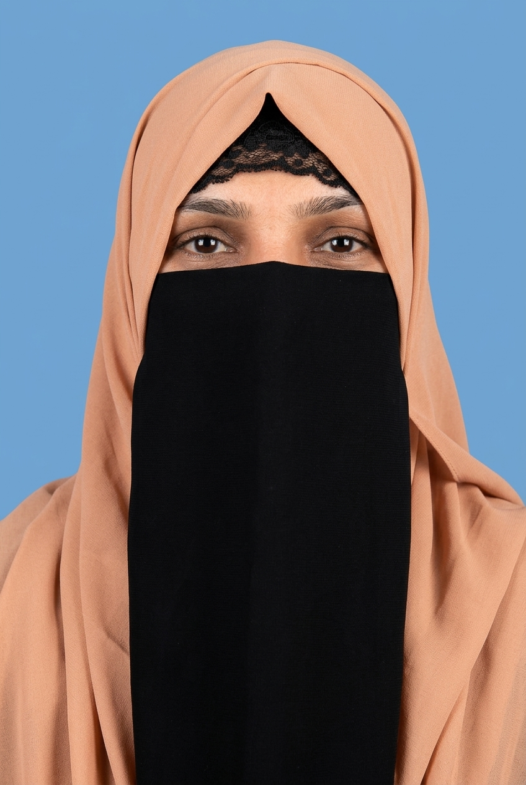

Doctor of Physical Therapy (DPT) — University of Sargodha
2021–2025

Doctor of Physical Therapy | Physiotherapist
To obtain a challenging position as a Physiotherapist in a progressive healthcare organization where I can utilize my clinical knowledge, practical skills, and patient-care abilities to provide effective rehabilitation and contribute positively to patients' health and well-being. I aim to continuously develop my professional skills while delivering compassionate and quality physiotherapy care.
2021–2025
2019–2020
2017–2018
Oct 2024 — June 2026
Maintained patient records and supported clinical care. Assisted healthcare teams and therapy activities.
Feb 2024 — Apr 2024
Assisted in therapy sessions under senior supervision. Participated in training and departmental activities.
Physiotherapy & Rehabilitation — Patient Care — Exercise Therapy — Musculoskeletal Rehabilitation — Sports Injury Rehabilitation — Learning New Treatment Techniques — Health & Wellness
Physiotherapy & Rehabilitation — Patient Care — Exercise Therapy — Musculoskeletal Rehabilitation — Sports Injury Rehabilitation — Learning New Treatment Techniques — Health & Wellness